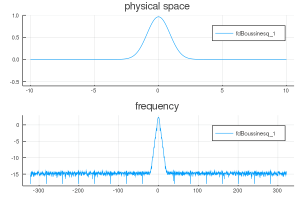

Animation
deep water problem solved with Cheng model animation
#using DeepWaterModels
include("../src/dependencies.jl")norm_problem! (generic function with 1 method)param = ( ϵ = 1/2,
N = 2^12,
L = 10,
T = 5.0,
dt = 0.001,
theta = 2.5)
initial = BellCurve(param)
solver = RK4(param)
model = Matsuno(param)
problem = Problem( model, initial, param )Main.ex-animation.Problem(Main.ex-animation.Matsuno("Matsuno", 2, [0.0, 0.314159, 0.628319, 0.942478, 1.25664, 1.5708, 1.88496, 2.19911, 2.51327, 2.82743 … 3.14159, 2.82743, 2.51327, 2.19911, 1.88496, 1.5708, 1.25664, 0.942478, 0.628319, 0.314159], Complex{Float64}[0.0+0.0im, 0.0+0.314159im, 0.0+0.628319im, 0.0+0.942478im, 0.0+1.25664im, 0.0+1.5708im, 0.0+1.88496im, 0.0+2.19911im, 0.0+2.51327im, 0.0+2.82743im … -0.0-3.14159im, -0.0-2.82743im, -0.0-2.51327im, -0.0-2.19911im, -0.0-1.88496im, -0.0-1.5708im, -0.0-1.25664im, -0.0-0.942478im, -0.0-0.628319im, -0.0-0.314159im], Complex{Float64}[0.0-0.0im, 0.0-1.0im, 0.0-1.0im, 0.0-1.0im, 0.0-1.0im, 0.0-1.0im, 0.0-1.0im, 0.0-1.0im, 0.0-1.0im, 0.0-1.0im … -0.0+1.0im, -0.0+1.0im, -0.0+1.0im, -0.0+1.0im, -0.0+1.0im, -0.0+1.0im, -0.0+1.0im, -0.0+1.0im, -0.0+1.0im, -0.0+1.0im], Bool[true, true, true, true, true, true, true, true, true, true … true, true, true, true, true, true, true, true, true, true], 0.5, Complex{Float64}[0.0+0.0im, 0.0+0.0im, 0.0+0.0im, 0.0+0.0im, 0.0+0.0im, 0.0+0.0im, 0.0+0.0im, 0.0+0.0im, 0.0+0.0im, 0.0+0.0im … 0.0+0.0im, 0.0+0.0im, 0.0+0.0im, 0.0+0.0im, 0.0+0.0im, 0.0+0.0im, 0.0+0.0im, 0.0+0.0im, 0.0+0.0im, 0.0+0.0im], Complex{Float64}[0.0+0.0im, 0.0+0.0im, 0.0+0.0im, 0.0+0.0im, 0.0+0.0im, 0.0+0.0im, 0.0+0.0im, 0.0+0.0im, 0.0+0.0im, 0.0+0.0im … 0.0+0.0im, 0.0+0.0im, 0.0+0.0im, 0.0+0.0im, 0.0+0.0im, 0.0+0.0im, 0.0+0.0im, 0.0+0.0im, 0.0+0.0im, 0.0+0.0im], Complex{Float64}[0.0+0.0im, 0.0+0.0im, 0.0+0.0im, 0.0+0.0im, 0.0+0.0im, 0.0+0.0im, 0.0+0.0im, 0.0+0.0im, 0.0+0.0im, 0.0+0.0im … 0.0+0.0im, 0.0+0.0im, 0.0+0.0im, 0.0+0.0im, 0.0+0.0im, 0.0+0.0im, 0.0+0.0im, 0.0+0.0im, 0.0+0.0im, 0.0+0.0im], Complex{Float64}[0.0+0.0im, 0.0+0.0im, 0.0+0.0im, 0.0+0.0im, 0.0+0.0im, 0.0+0.0im, 0.0+0.0im, 0.0+0.0im, 0.0+0.0im, 0.0+0.0im … 0.0+0.0im, 0.0+0.0im, 0.0+0.0im, 0.0+0.0im, 0.0+0.0im, 0.0+0.0im, 0.0+0.0im, 0.0+0.0im, 0.0+0.0im, 0.0+0.0im], Complex{Float64}[0.0+0.0im, 0.0+0.0im, 0.0+0.0im, 0.0+0.0im, 0.0+0.0im, 0.0+0.0im, 0.0+0.0im, 0.0+0.0im, 0.0+0.0im, 0.0+0.0im … 0.0+0.0im, 0.0+0.0im, 0.0+0.0im, 0.0+0.0im, 0.0+0.0im, 0.0+0.0im, 0.0+0.0im, 0.0+0.0im, 0.0+0.0im, 0.0+0.0im], Complex{Float64}[0.0+0.0im, 0.0+0.0im, 0.0+0.0im, 0.0+0.0im, 0.0+0.0im, 0.0+0.0im, 0.0+0.0im, 0.0+0.0im, 0.0+0.0im, 0.0+0.0im … 0.0+0.0im, 0.0+0.0im, 0.0+0.0im, 0.0+0.0im, 0.0+0.0im, 0.0+0.0im, 0.0+0.0im, 0.0+0.0im, 0.0+0.0im, 0.0+0.0im], FFTW forward plan for 4096-element array of Complex{Float64}
(dft-ct-dit/8
(dftw-direct-8/28 "t2fv_8_sse2")
(dft-vrank>=1-x8/1
(dft-ct-dit/16
(dftw-direct-16/60 "t2fv_16_sse2")
(dft-direct-32-x16 "n2fv_32_sse2"))))), Main.ex-animation.BellCurve([6.39671e-96, 8.3583e-96, 1.09193e-95, 1.42622e-95, 1.86248e-95, 2.43171e-95, 3.1743e-95, 4.14284e-95, 5.40586e-95, 7.05254e-95 … 9.19902e-95, 7.05254e-95, 5.40586e-95, 4.14284e-95, 3.1743e-95, 2.43171e-95, 1.86248e-95, 1.42622e-95, 1.09193e-95, 8.3583e-96], [0.0, 0.0, 0.0, 0.0, 0.0, 0.0, 0.0, 0.0, 0.0, 0.0 … 0.0, 0.0, 0.0, 0.0, 0.0, 0.0, 0.0, 0.0, 0.0, 0.0]), (ϵ = 0.5, N = 4096, L = 10, T = 5.0, dt = 0.001, theta = 2.5), Main.ex-animation.RK4(Complex{Float64}[0.0+0.0im 0.0+0.0im; 0.0+0.0im 0.0+0.0im; … ; 0.0+0.0im 0.0+0.0im; 0.0+0.0im 0.0+0.0im], Complex{Float64}[0.0+0.0im 0.0+0.0im; 0.0+0.0im 0.0+0.0im; … ; 0.0+0.0im 0.0+0.0im; 0.0+0.0im 0.0+0.0im]), Main.ex-animation.Times(5001, 5001, 1, 5.0, 0.001, [0.0, 0.001, 0.002, 0.003, 0.004, 0.005, 0.006, 0.007, 0.008, 0.009 … 4.991, 4.992, 4.993, 4.994, 4.995, 4.996, 4.997, 4.998, 4.999, 5.0], [0.0, 0.001, 0.002, 0.003, 0.004, 0.005, 0.006, 0.007, 0.008, 0.009 … 4.991, 4.992, 4.993, 4.994, 4.995, 4.996, 4.997, 4.998, 4.999, 5.0]), Main.ex-animation.Mesh(4096, -10.0, 10.0, 0.0048828125, [-10.0, -9.99512, -9.99023, -9.98535, -9.98047, -9.97559, -9.9707, -9.96582, -9.96094, -9.95605 … 9.95117, 9.95605, 9.96094, 9.96582, 9.9707, 9.97559, 9.98047, 9.98535, 9.99023, 9.99512], -643.3981754551896, 643.0840161898307, 0.3141592653589793, [0.0, 0.314159, 0.628319, 0.942478, 1.25664, 1.5708, 1.88496, 2.19911, 2.51327, 2.82743 … -3.14159, -2.82743, -2.51327, -2.19911, -1.88496, -1.5708, -1.25664, -0.942478, -0.628319, -0.314159]), Main.ex-animation.Data(Array{Complex{Float64},2}[[420.807+0.0im 0.0+0.0im; -409.419-2.01228e-15im 0.0+0.0im; … ; 376.859-4.88498e-15im 0.0+0.0im; -409.419-2.33517e-14im 0.0+0.0im]], 2, 4096))print("\nNow solving the model ",problem.model.label,"\n")
@time solve!( problem )
Now solving the model Matsuno
problem.param = (ϵ = 0.5, N = 4096, L = 10, T = 5.0, dt = 0.001, theta = 2.5)
Progress: 0%| | ETA: 1:36:12[K
Progress: 6%|██▋ | ETA: 0:00:32[K
Progress: 13%|█████▍ | ETA: 0:00:21[K
Progress: 20%|████████▏ | ETA: 0:00:17[K
Progress: 27%|██████████▉ | ETA: 0:00:14[K
Progress: 33%|█████████████▋ | ETA: 0:00:12[K
Progress: 40%|████████████████▍ | ETA: 0:00:11[K
Progress: 44%|█████████████████▉ | ETA: 0:00:11[K
Progress: 51%|████████████████████▉ | ETA: 0:00:09[K
Progress: 58%|███████████████████████▋ | ETA: 0:00:07[K
Progress: 65%|██████████████████████████▌ | ETA: 0:00:06[K
Progress: 72%|█████████████████████████████▋ | ETA: 0:00:05[K
Progress: 79%|████████████████████████████████▌ | ETA: 0:00:03[K
Progress: 86%|███████████████████████████████████▎ | ETA: 0:00:02[K
Progress: 93%|██████████████████████████████████████▏ | ETA: 0:00:01[K
Progress: 100%|█████████████████████████████████████████| ETA: 0:00:00[K
16.659012 seconds (1.48 M allocations: 693.059 MiB, 1.74% gc time)print("\nNow generating the animation\n")
@time create_animation( problem )
Now generating the animation
Progress: 1%|▌ | ETA: 0:01:26[K
Progress: 3%|█▏ | ETA: 0:01:15[K
Progress: 4%|█▋ | ETA: 0:01:13[K
Progress: 5%|█▉ | ETA: 0:01:25[K
Progress: 7%|██▊ | ETA: 0:01:10[K
Progress: 8%|███▎ | ETA: 0:01:09[K
Progress: 9%|███▊ | ETA: 0:01:10[K
Progress: 11%|████▍ | ETA: 0:01:08[K
Progress: 12%|████▉ | ETA: 0:01:07[K
Progress: 13%|█████▎ | ETA: 0:01:08[K
Progress: 14%|█████▊ | ETA: 0:01:09[K
Progress: 16%|██████▌ | ETA: 0:01:06[K
Progress: 17%|███████ | ETA: 0:01:04[K
Progress: 19%|███████▉ | ETA: 0:01:00[K
Progress: 21%|████████▌ | ETA: 0:00:59[K
Progress: 23%|█████████▎ | ETA: 0:00:56[K
Progress: 24%|█████████▉ | ETA: 0:00:55[K
Progress: 26%|██████████▋ | ETA: 0:00:53[K
Progress: 28%|███████████▍ | ETA: 0:00:50[K
Progress: 29%|████████████ | ETA: 0:00:49[K
Progress: 31%|████████████▊ | ETA: 0:00:47[K
Progress: 32%|█████████████▎ | ETA: 0:00:47[K
Progress: 34%|██████████████▏ | ETA: 0:00:45[K
Progress: 36%|██████████████▊ | ETA: 0:00:44[K
Progress: 38%|███████████████▌ | ETA: 0:00:42[K
Progress: 40%|████████████████▎ | ETA: 0:00:41[K
Progress: 41%|████████████████▊ | ETA: 0:00:40[K
Progress: 43%|█████████████████▊ | ETA: 0:00:38[K
Progress: 45%|██████████████████▍ | ETA: 0:00:37[K
Progress: 47%|███████████████████▍ | ETA: 0:00:34[K
Progress: 49%|████████████████████ | ETA: 0:00:34[K
Progress: 50%|████████████████████▊ | ETA: 0:00:32[K
Progress: 52%|█████████████████████▍ | ETA: 0:00:31[K
Progress: 54%|██████████████████████▏ | ETA: 0:00:30[K
Progress: 56%|██████████████████████▉ | ETA: 0:00:28[K
Progress: 57%|███████████████████████▍ | ETA: 0:00:28[K
Progress: 59%|████████████████████████▏ | ETA: 0:00:27[K
Progress: 60%|████████████████████████▋ | ETA: 0:00:26[K
Progress: 62%|█████████████████████████▎ | ETA: 0:00:25[K
Progress: 64%|██████████████████████████▏ | ETA: 0:00:24[K
Progress: 65%|██████████████████████████▋ | ETA: 0:00:23[K
Progress: 67%|███████████████████████████▎ | ETA: 0:00:22[K
Progress: 68%|███████████████████████████▉ | ETA: 0:00:21[K
Progress: 70%|████████████████████████████▋ | ETA: 0:00:20[K
Progress: 72%|█████████████████████████████▍ | ETA: 0:00:18[K
Progress: 73%|██████████████████████████████ | ETA: 0:00:18[K
Progress: 75%|██████████████████████████████▊ | ETA: 0:00:16[K
Progress: 76%|███████████████████████████████▎ | ETA: 0:00:15[K
Progress: 78%|████████████████████████████████ | ETA: 0:00:14[K
Progress: 80%|████████████████████████████████▋ | ETA: 0:00:13[K
Progress: 81%|█████████████████████████████████▏ | ETA: 0:00:12[K
Progress: 83%|█████████████████████████████████▉ | ETA: 0:00:11[K
Progress: 84%|██████████████████████████████████▌ | ETA: 0:00:10[K
Progress: 86%|███████████████████████████████████▏ | ETA: 0:00:09[K
Progress: 88%|████████████████████████████████████ | ETA: 0:00:08[K
Progress: 89%|████████████████████████████████████▍ | ETA: 0:00:07[K
Progress: 91%|█████████████████████████████████████▏ | ETA: 0:00:06[K
Progress: 92%|█████████████████████████████████████▊ | ETA: 0:00:05[K
Progress: 94%|██████████████████████████████████████▌ | ETA: 0:00:04[K
Progress: 96%|███████████████████████████████████████▏ | ETA: 0:00:03[K
Progress: 96%|███████████████████████████████████████▌ | ETA: 0:00:02[K
Progress: 98%|████████████████████████████████████████▍| ETA: 0:00:01[K┌ Info: Saved animation to
└ fn = "/Users/travis/build/WaterWavesModels/DeepWaterModels.jl/docs/build/examples/anim.gif"
67.057634 seconds (80.06 M allocations: 6.733 GiB, 3.61% gc time)
This page was generated using Literate.jl.